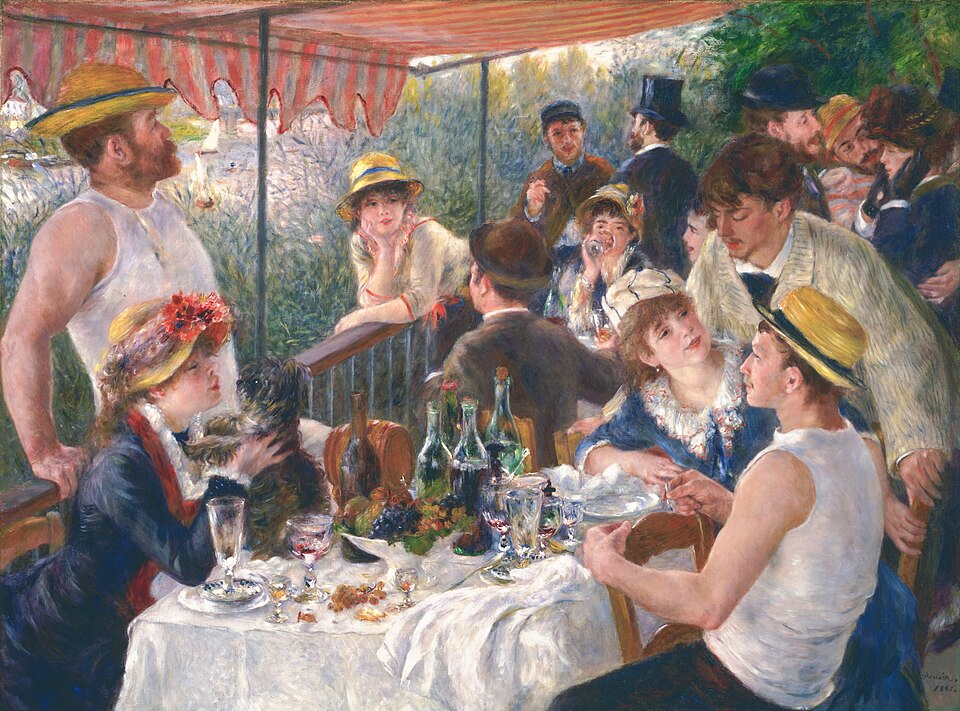

⛏Our party needs to find diamonds in this cave.
私たちのグループはこの洞窟でダイヤを見つける必要がある。
/ˈaʊɚ ˈpɑːɾi nidz tə ˈfaɪnd ˈdaɪmənz ɪn ðɪs keɪv/
- 「to find」→ to は弱形 /tə/「タ」に弱化
アウア パーリ ニーズ タ ファインド ダイモンズ イン ディス ケイヴ

⛏Our party needs to find diamonds in this cave.
私たちのグループはこの洞窟でダイヤを見つける必要がある。
⛏We're going to party at the end of the world!
ワールドの果てでパーティーをするつもりだ！
⛏Should we have a party to celebrate finding the village?
村を見つけたことを祝ってパーティーをしようか？
The villagers are partying at the celebration hall because we just defeated the Ender Dragon.
エンダードラゴンを倒したばかりだから、村人たちが祝いの広場でパーティーをしています。
Why is Steve partying while there are still zombies outside the base?
拠点の外にまだゾンビがいるのに、なぜスティーブはパーティーをしてるんですか?
We were partying in the base when a creeper suddenly appeared right at the wall.
拠点の壁のすぐそばにクリーパーが突然現れた時、私たちは基地でパーティーをしていました。
The villagers were partying all night until the sun came up and they had to go back to their homes.
日が昇るまで村人たちは一晩中パーティーをしていて、その後家に帰らなければなりませんでした。
We had been partying for three hours when we heard that the Ender Dragon was approaching the base.
3時間パーティーをしていた時、エンダードラゴンが基地に近づいているという知らせを聞きました。
By the time the sun rose, they had been partying since sunset without taking any break.
日が昇る頃までに、彼らは日没から休憩なしでずっとパーティーをしていました。
They have partied together on this server for many months.
彼らはこのサーバーで何ヶ月も一緒にパーティーをしています。
She has partied in celebration events across multiple Minecraft realms.
彼女は複数のマインクラフトレルムの祝賀イベントでパーティーをしてきました。
By the time the Wither boss appeared, we had partied with many players from different clans.
ウィザーボスが現れるまでに、私たちは異なるクランから多くのプレイヤーと一緒にパーティーをしていました。
They had partied at the castle before the unexpected zombie siege.
予期しないゾンビの包囲の前に、彼らは城でパーティーをしていました。
We have been partying on this realm since the day it opened.
このレルムが開いた日からずっと、私たちはパーティーをしています。
She has been partying with her friends all summer long.
彼女は夏中ずっと友達とパーティーをしています。
We will party at the main base after we finish building the new monument.
新しいモニュメント建築が完了した後、メインベースでパーティーをします。
They will party in the village square to celebrate the completion of the end-game raid.
彼らはエンドゲームレイドの完了を祝うために、村の広場でパーティーをします。
When the server comes back online, we will be partying at the guild hall.
サーバーがオンラインに戻ったとき、私たちはギルドホールでパーティーをしているでしょう。
If you join us tomorrow afternoon, they will be partying with the raid team on the realm.
もし明日の午後に参加すれば、彼らはレルムでレイドチームとパーティーをしているでしょう。
By the time the Ender Dragon appears, we will have partied together for many weeks.
エンダードラゴンが出現するまでに、私たちは何週間も一緒にパーティーをしているでしょう。
By next month, the guild will have partied at the castle more than fifty times.
来月までに、ギルドは城で50回以上パーティーをしているでしょう。
⛏Should we have a party to celebrate finding the village?
村を見つけたことを祝ってパーティーをしようか？